Relationaler Entwurf
Contents
6. Relationaler Entwurf¶
Die meisten kommerziellen Datenbanken unterstützen das relationale Datenmodell. In diesem Kapitel lernen wir das relationale Modell kennen und diskutieren Methoden zur Überführung von Datenspezifikationen aus dem ER-Modell ins relationale Modell.
6.1. Das Relationale Modell¶
Im Folgenden werden wir ähnlich zum ER-Modell die grundlegenden Bausteine des relationalen Modells kennen lernen. Zentrale Grundbegriffe des relationalen Modells sind Relationen und Tupel.
In der Mathematik ist eine Relation \(R\) eine Teilmenge des Kreuzproduktes von \(n\) Mengen: \(R\subset A_1 \times A_2 \times \cdots \times A_n\). Ein Element der Relation ist ein n-Tupel: \(\forall t \in R. t=(a_1,a_2,\cdots, a_n) \wedge a_i \in A_i\)
Für Datenbanken gelten die aus der Mathematik bekannten Beziehungen mit folgenden zusätzlichen semantischen Erweiterungen. Die Mengen \(A_i\) sind im Datenkontext Domänen bzw. Wertebereiche. Diese Wertebereiche können im allgemeinen Standarddatentypen wie Integer, String, Boolean, usw. sein oder konkrete Wertebereiche, die durch Attribute definiert werden, wie zum Beispiel ID, Name, Alter, Geschlecht. Prinzipiell entspricht eine solche Menge der Spalte einer Tabelle.
Analog bilden die Einträge der Tupel \((a_1,\cdots, a_n)\) die Datenwerten einer Tabelle, z.B. (4, Abedjan, 36, m). Ein Tupel entspricht einer Zeile einer Tabelle.
6.1.1. Die Relation¶
Konzeptuell ist eine Datenbank eine Menge von Tabellen. Jede Tabelle stellt die Daten einer Relation dar. Eine Tabelle besteht aus Spalten, die in Relation zu einander stehen. Damit beinhaltet jede Zeile Datenwerte aus den jeweiligen Domänen, die in Relation zu einander stehen. Wir werden oft Tabellen und Relationen alternierend nutzen, obwohl diese konzeptionell unterschiedliche Konzepte sind. Eine Relation ist ein mathematisches Konzept, welches aus Mengen und Tupeln zusammensetzt ist, während eine Tabelle ein zweidimensionales Feld bestehend aus Spalten und Zeilen ist. Es ist jedoch leicht einzusehen, dass jede Relation als Tabelle darstellbar ist.
Rückführend auf den ersten Satz dieses Unterabschnitt stellen wir also fest, dass die Relation das einzige Konstrukt des relationalen Modells ist und folgende Vorteile sich dadurch ergeben:
Leicht beschreibbar. Entspricht oft unserer Vorstellung der Daten.
Einfach in einer DB abzubilden (zwei-dimensionales Array, Liste von Arrays, usw. )
Relationen bilden als einzelnes Konstrukt sowohl Entitytypen als auch Relationshiptypen ab.
Ist das abstrakte Modell hinter SQL, welches häufig angewendet wird.
6.1.2. Elemente des Relationalen Modells¶
Zentrale Elemente des relationalen Modells sind Attribute, Tupel und Schema.
Datenbankschema: Im Groben beschreibt jedes relationale Modell ein Datenbankschema, welche aus einem oder mehreren Relationenschemata besteht.
Relationenschema: Jede Relation wird durch ihr Schema identifiziert. Das Relationenschema besteht aus dem Namen der Relation und der Liste der Attribute und ihrer Domänen. In einer Tabelle entspricht die Kopfzeile dem Relationenschema. Alle weiteren (Daten-)Einträge in der Tabelle bilden die „Relation“
Die Relation besteht aus keinem oder mehr Tupeln. Im relationalen Modell bilden Tupel einer Relation immer eine Menge. Das heißt, dass kein Tupel in seiner gesamten Ausprägung doppelt auftauchen kann. Diese Annahme gilt in echten Datenbanksystemen nur dann, wenn ein Schlüssel vorhanden ist.
Attribute entsprechen den Bezeichnern der zu einander in Relation stehenden Domänenmengen. In Tabellen entsprechen Attribute den Spaltenbezeichnern (Überschriften). In einem Relationenschema kann ein Attribut nicht doppelt vorkommen. Das Relationenschema ist somit eine Menge.
Attributwert: Jeder Dateneintrag in einem Tupel entspricht dem Attributwert der jeweiligen Spalte. Attributwerte sind atomar und stammen aus einer elementaren Domäne.
Ein Tupel entspricht aus einer vollständigen Kombination von Attributwerten.
In der Abbildung unten sind die jeweiligen Elemente nochmal visuell dargestellt. Wir haben Primärschlüssel und Fremdschlüssel auch bereits dargestellt. Diese sind wie bekannt aus dem ER-Modell, Attribute die referenzielle Integrität gewährleisten. Hierauf werden wir später in diesem Kapitel genauer eingehen.
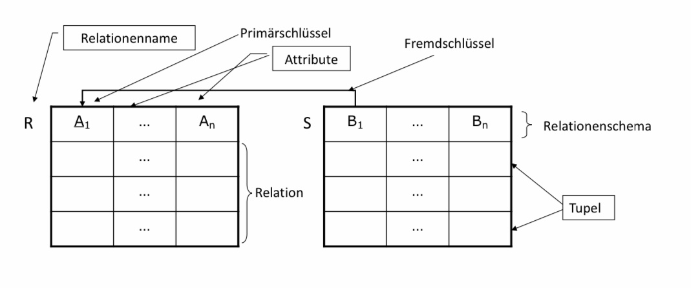
6.1.3. Formal¶
Formal betrachtet können wir die mathematische Definition von Relationen etwas spezieller auf Relationen in Datenbanken anwenden. Ausgangspunkt sind \(n\) Domänen \(D_1, D_2, \dots, D_n\). Jede Domäne entspricht einer endlichen oder unendlichen Menge von gleichartigen Ausdrücken. Domänen können auch ganz allgemein als Datentypen wie String oder Integer aufgefasst werden. Eine Relation im Sinne des relationalen Modells ist die Teilmenge des Kreuzproduktes von \(n\) Domänen: \(R \subseteq D_1 \times D_2 \times \dots \times D_n \). Daraus Ergibt sich, dass es für jede Domäne \(D_n\) eine Menge \(A_n \subset D_n\) gibt die alle Werte, die in der Zieltabelle vorkommen abbilden. Zum Beispiel könnte \(A_n\) die Menge aller Adressen eines Unternehmens sein. Im folgenden Beispiel wird das nochmal verdeutlicht. Formal gibt es für jede Attributwertmenge \(A_n\) auch ein Label \(a_n\) welches die Menge bezeichnet. Hier: \(a_n=\) “Adressen”. Oft wird \(A_n\) auch Synonym (unsauber) als Bezeichner verwendet.
Beispiel
Relationenschema: \(R(a_1,a_2,a_3,a_4)\) \(\equiv\) Film(Titel, Jahr, Länge, Typ)
Domänen: String, Integer, Integer, String
Tupel: (Star Wars, 1977, 124, farbig)
6.1.4. Edgar F. Codd¶
Die Relationale-Datenbanktheorie geht auf den Turing Award Gewinner Edgar F. Codd zurück, welcher an der University of Michigan Ann Arbor promoviert hat. Bei IBM (Almaden) hat Codd das Relationalen Modell entwickelt und das Paper „A Relational Model of Data for Large Shared Data Banks” 1970 veröffentlicht.
Literaturhinweis:
The Database Relational Model: A Retrospective Review and Analysis:
A Historical Account and Assessment of E. F. Codd’s Contribution to the Field of Database Technology
Chris J. Date
ISBN: 0-201-61294-1 (9.99 EUR)
6.1.4.1. Beiträge von Codd¶
Edgar F. Codd hat nicht nut das relationale Modell entwickelt, sondern überhaupt das Konzept eines Datenmodells. Dazu gehört auch die Unterschiedung zwischen Modell und Implementierung, sowie ein mathematisches Regelwerk für Anfragen, die relationale Algebra und das relationale Kalkül. Auf diesem Regelwerk basiert informell die Anfragesprache Alpha und daran angelehnt SEQUEL(SQL Vorgänger) von Chamberlin und Boyce. Ebenso von Codd sind Integritätsbedingungen und Qualitätsformen, wie funktionale Abhängigkeiten und Normalformen(erste bis dritte). Durch seine Beiträge hat Codd das Datenmanagement zu einer Wissenschaft, mit entsprechender Klarheit und Strenge, transformiert.
6.2. Von ER-Diagrammen zu Relationenschemata¶
In diesem Kapitel möchten wir lernen, wie wir von einem ER-Diagramm zu einem Relationenschema gelangen. Wir befinden uns im Phasenmodell im logischen Entwurf. Als Sprachmittel haben wir das Datenmodell des ausgewählten DBMS gegeben z.B. DB2, Oracle, … => relationales Modell. Am idealsten wäre eine automatische Transformation des konzeptionellen Schemas, z.B ER in relationales Modell erwüscht. Danach ist es noch möglich das entstandende relationale Schema anhand von Gütekriterien, mit Normalisierung und Redundanzvermeidung zu verbessern. Zuletzt soll das Hauptergebnis ein logisches Schema sein, wie z.B. eine Sammlung von Relationenschemata.
6.2.1. Ziele der Abbildung ER -> relationales Modell¶
Bei der Umformung eines ER-Diagramms in ein relationales Modell, soll das relationalle Modell alle Informationen des ER-Diagramms darstellen. Dabei spielt einmal die Exaktheit eine große Rolle. D.h. dass das Datenbankschema genauso viele und nicht mehr Instanzen als das ER-Diagramm darstellen kann, wobei Integritätsbedingungen weiterhin gelten müssen. Ziel ist also eine Erhaltung und Einhaltung der Informationskapazität!
6.2.1.1. Kapazitätserhöhende Abbildung¶
In diesem Kontext betrachten wir ein Beispiel. Angenommen wir haben ein 1:1-Beziehung zwsichen Studios und Vorsitzende. Studios hat einen Schlüssel SName und Vorsitzende einen Schlüssel VName. Entsprechend könnten wir das Relationenschema: R = {SName, VName} wählen. Für unser gewähltes Relationenschema könnten wir die Schlüsselmenge: wählen. Jedoch wäre es so möglich, dass ein Vorsitzende*r mehrere Studios leitet und die 1:1-Beziehung verletzt. Das wäre dann eine kapazitätserhöhende Abbildung. Würden wir als Schlüsselmenge beide Schlüssel wählen, dann hätten wir eine kapazitätserhaltende Abbildung die eine 1:1-Beziehung abbildet.
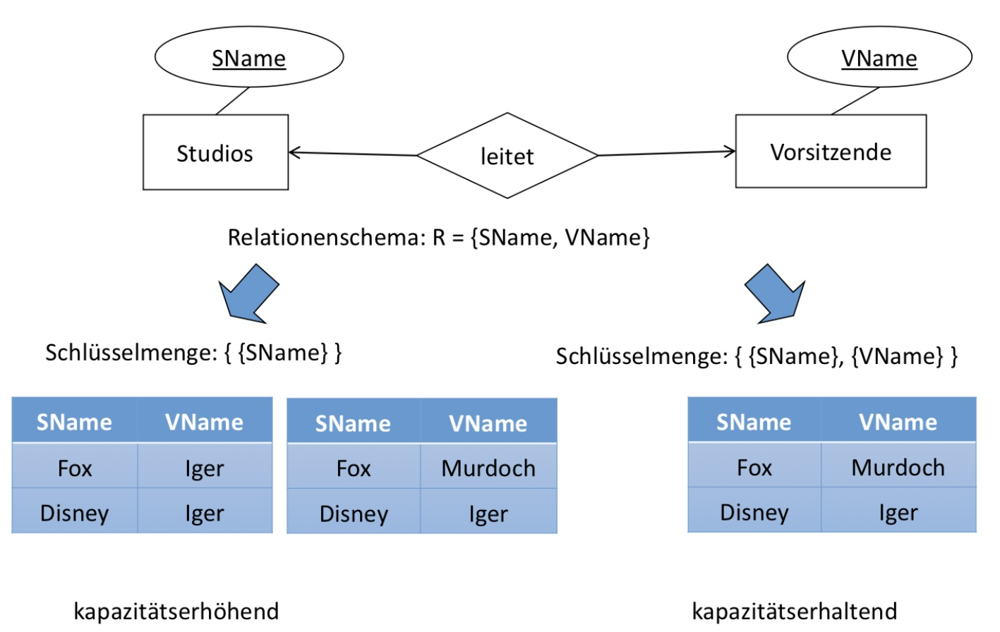
6.2.2. Kapazitätsvermindernde Abbildung¶
Betrachten wir nun folgendes Beispiel, in dem ein*e Schauspieler*in in einem Film mitspielt. Es herrscht eine n:m-Beziehung zwischen Schuspieler*in und Film. Schauspieler*in wird durch Name und Film durch Titel eindeutig identifiziert. Wir wählen nun als Relationenschema: R = {Name, Titel}. Wenn wir nun als Schlüsselmenge wählen, dann kann ein*e Schauspieler*in nur jeweils einmal in unserer Relation vorkommen, welches unsere eigentlich Kapazitäts verminderd. Wählt man stattdessen als Schlüsselmenge (Undefined, Undefined), so kommt die Kombination aus Name und Titel jeweils nur einmal in unserer Relation vor, welches kapazitätserhaltend ist.
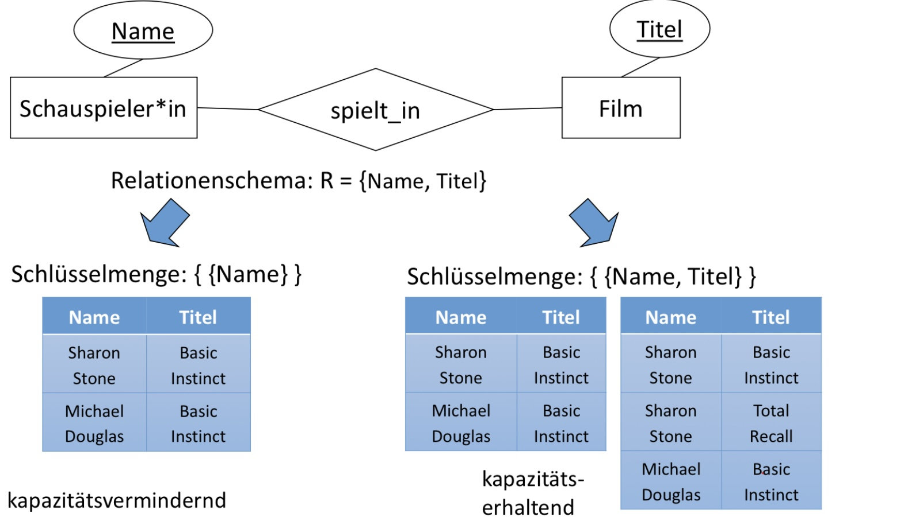
6.2.3. Grundalgorithmus¶
Der Grundalgorithmus für eine kapazitätserhaltende und -einhaltende Abbildung sieht wie folgt aus:
Wandle jeden Entitytypen in eine Relation mit den gleichen Attributen um.
Wandle jeden Relationshiptypen in eine Relation um mit:
Zugehörige Attribute des Relationshiptypen
Schlüsselattribute der beteiligten Entitytypen
Verfeinere den Entwurf
Zusammenlegung von Relationen
Normalisierung
Ausnahmen gibt es bei dem Umgang mit schwachen Entitytypen und IST Relationships. Diese werden wir uns noch genauer in folgenden Kapiteln betrachten.
6.2.4. Entity -> Relation¶
Wir haben folgendes ER-Diagramm gegeben. Bei der Umwandlung eines Entitytyps in eine Relation wird der Name des Entitytyps zu dem Namen der Relation. Die Attribute des Entitytyps werden zu den Attribute der Relation. Die daraus entstehende Relation bildet in keiner Weise Relationships ab.
Für die drei Entitytyps aus dem Diagramm, ergeben sich folgende Relationen:
Film(Titel, Jahr, Länge, Typ)
Schauspieler(Name, Adresse)
Studio(Name, Adresse)
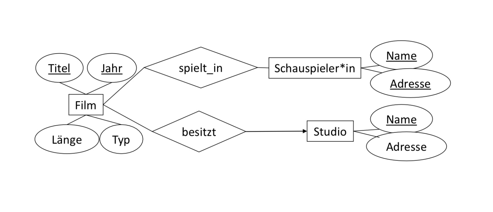
6.2.5. Relationshiptyp -> Relation¶
Bei der Umwandlung eines Relationshiptyps in eine Relation, müssen die Attribute des Relationshiptyps selbst und die Schlüsselattribute der beiteiligten Entitytypen mitgenommen werden. Sind doppelte Attributnamen vorhanden, sind
Umbenennungen nötig!
Falls ein Entitytyp in mehreren Rollen beteiligt ist, müssen die Schlüsselattribute entsprechend oft übernommen werden. Geeignete Umbenennungen sind dann sogar nötig.
6.2.5.1. Beispiel 1¶
Für folgendes ER-Diagramm ergeben sich diese Relationen:
spielt_in(Titel, Jahr, SchauspielerInName, SchauspielerInAdresse, Rolle)
spielt_in enthält alle Schlüsselattribute von Film und Schauspieler*in und die eigenen Attribute
besitzt(Titel, Jahr, StudioName)
besitzt enthält alle Schlüsselattribute von Film und Studio
Umbenennungen dienen hier nur zur Klarheit.
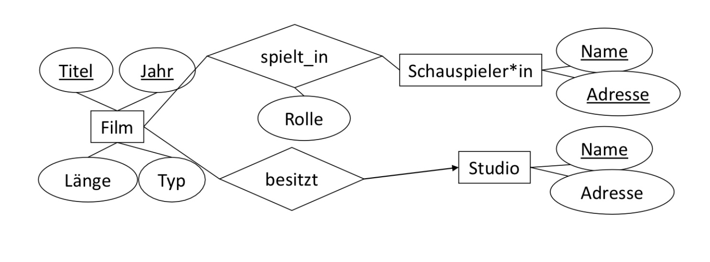
6.2.5.2. Beispiel 2¶
Bei ternären Beziehungen bleibt das Prinzip gleich. Für die unten dargestellte Beziehung, werden alle Schlüsselattribute der beteiligten Entitytypen, Film, Studio und Schauspieler*in mitgenommen. Und ebenso die Attribute der Beziehung selbst. So ergibt sich das Relationsschema:
ist_unter_Vertrag(Titel, Jahr, SchauspielerName, SchauspielerAdresse, StudioName)
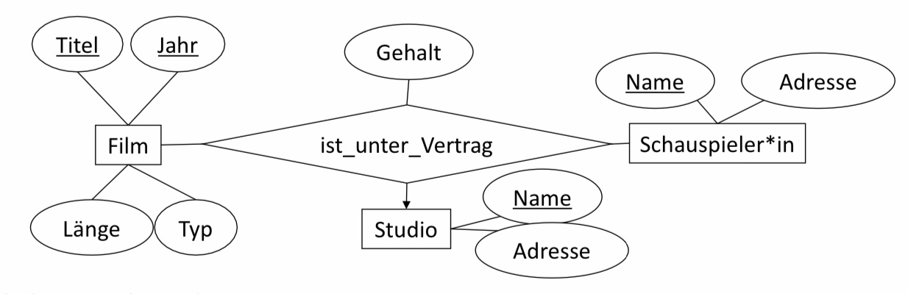
6.2.5.3. Beispiel 3¶
Zuletzt betrachten wir ein Beziehung mit mehreren Rollen. Das ER-Diagramm ist ähnlich zudem vorherigen, bis darauf, dass ist_unter Vetrag einaml die Rolle Stammstudio und einmal die Rolle porduzierendes Studio besitzt. Dementsprechend muss das Schlüsselattribut des Entitytyps Studio, jeweils einmal für jede Rolle vorkommen. Es ergibt sich demnach folgendes Relationsschema:
ist_unter_Vertrag(Titel, Jahr, SchauspielerName, SchauspielerAdresse, Stammstudio, ProduzierendesStudio, Gehalt)
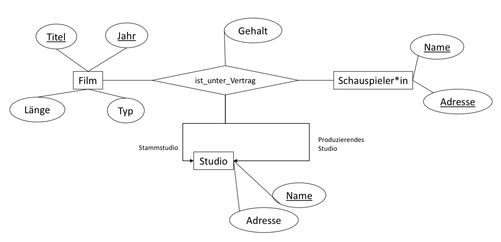
6.2.6. Zusammenlegen von Relationen¶
In manchen Fällen können bestimmte Relationen zusammengelegt werden, das ist häufig der Fall wenn eine eindeutige Zuordnung möglich ist. Der Vorteil des Zusammenlegens ist, dass wir Redundanz minimieren.
6.2.6.1. 1:n-Relationships¶
Z.B kann die Relation für einen Entitytypen E mit der Relation eines 1:n Relationshiptypen R zusammengelegt werden, falls E auf den n-Seite liegt. Die neue Relation enthält also alle Attribute von E und alle Attribute von R inkl. den Schlüsseln des anderen Entitytyps.
In dem ER-Diagramm unten, finden wir eine 1:n-Beziehung, demnach können wir die Relationen Film und besitzt zusammenlegen. In unserer Ausgangssitutation haben wir drei Relationen eine für Film, einer für besitzt und eine für Studio. Nun können wir Film und besitzt zusammenlegen. Unsere resultierende Relation hat alle Attribute von Film und besitzt. Der Vorteil des Zusammenlegens ist, dass wir Redundanz minimieren.
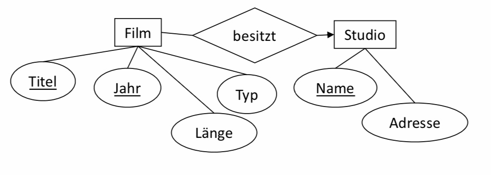
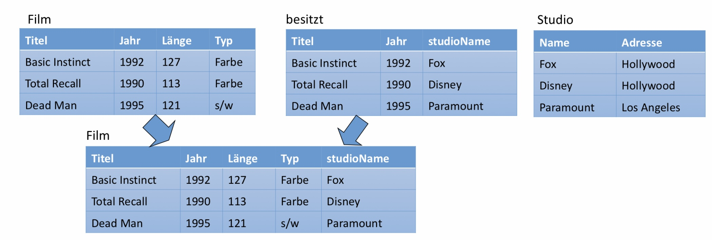
6.2.6.2. 1:1-Relationships¶
Haben wir eine 1:1-Beziehung gegegeben, wie in dem ER-Diagramm unten dargestellt. Es ist möglich eine der beiden beteiligten Entitytyp-Relationen mit der Relationship-Relation zusammenzulegen. Für unser Beispiel können wir also entweder leitet mit Studions oder mit Vorsitzende zusammenlegen. Eines der beiden Möglichkeiten ist erlaubt.
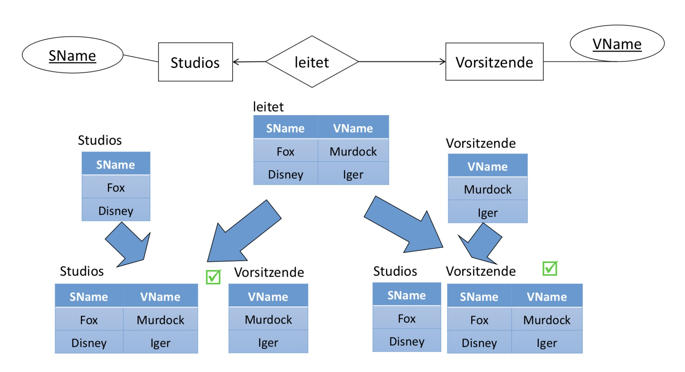
6.2.6.3. Falschbeispiel: n-m-Relationships¶
Relationen von n:m-Relationships dürfen nicht zusammengelegt werden. Das liegt daran, dass Redundanz so erhöht wird. Betrachten wir das Beispiel unten. Wenn wir nun einen neuen Eintrag (Dead Man, 1995, Robert Michum) in die spielt_in-Relation einfügen wollen würden, dann müsste Jahr, Länge, Typ wieder mitführen müssten.
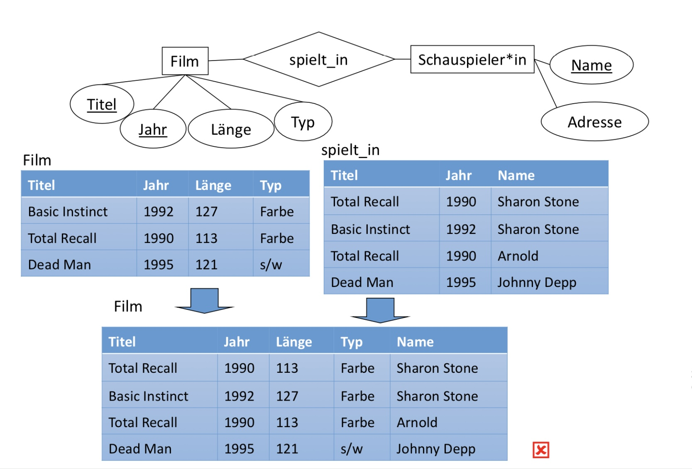
6.2.7. Schwache Entitytypen¶
Schwache Entitytypen haben drei Besonderheiten:
Die Relation eines schwachen Entitytypen S muss nicht nur die eigenen Attribute, sondern auch die Schlüsselattribute aller Entitytypen, die über unterstützende Relationshiptypen erreicht werden, enthalten.
Alle Relationen für Relationshiptypen, die S in Beziehung mit anderen Entitytypen setzen, müssen ebenfalls alle diese Attribute enthalten.
Ein unterstützender Relationshiptyp muss hingegen gar nicht durch eine Relation abgebildet werden. Die Begründung ist analog zu der bei 1:n-Relationships.
6.2.7.1. Beispiel 1¶
In unseren Beispiel-ER-Diagramm haben wir den schwachen Entitytyp Crew gegeben. Die Relation Crew enthält alle eigenen Attribute, hier nur Nummer und die Schlüsselattribute derer Entitytypen, mit denen Crew in einer unterstützenden Realtionship verbunden ist, hier Name von Studio. Die Relation arbeitet_für wird nicht gebraucht.
Studios(Name, Adresse)
Crews(Nummer, Name)
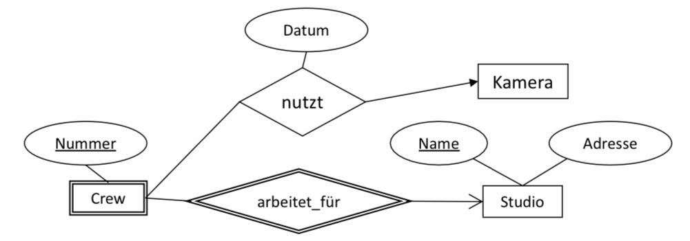
6.2.7.2. Beispiel 2¶
In diesem Beispiel betrachten wir einen schwachen Entitytypen, welcher in drei unterstützenden Relationships beteiligt ist. Zuerst erstellen wir die Relationenschemata für die “normalen” Entityptypen Schauspiler*in, Film und Studio. Die Relation Vertrag enthält alle Schlüsselattribute der Entitytypen mit denen der schwache Entitytyp in einer unterstützenden Beziehung steht. Für die unterstützenden Relationships sind keine Realtionenschemata nötig.
Studio(Name, Adresse)
Schauspieler*in(Name, Adresse)
Film(Titel, Jahr, Typ, Länge)
Vertrag(Schauspieler*inName, StudioName, Titel, Jahr, Gehalt)
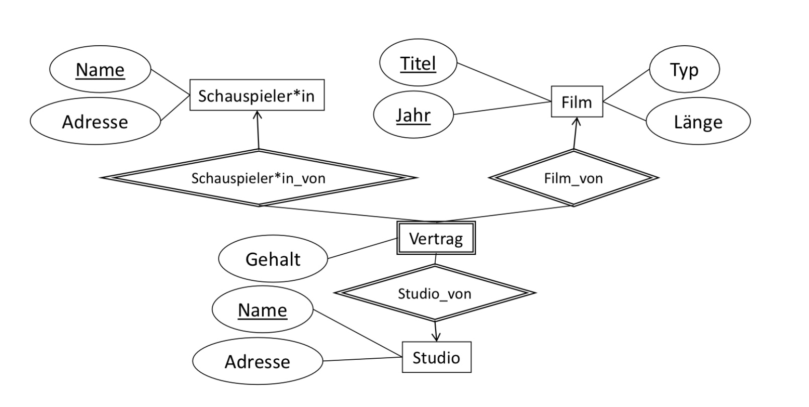
6.2.7.3. Beispiel 3¶
Aus dem ER-Diagramm unten lassen sich folgende Relationsschemata bilden.
Studio(Name, Adresse)
Schauspieler*in(Name, Adresse)
Film(Titel, Jahr, Typ, Länge)
ist_unter_Vertrag(Schauspieler*inName, StudioName, Titel, Jahr, Gehalt)
Was fällt auf?
6.2.8. Schema Teilmengen¶
Gleiche oder überlappende Schemata können/sollen nicht immer zusammengelegt werden. Haben wir z.B die Relationen Personen(Name, SSN) und Steuerzahler*in(Name, SSN, Betrag) gegeben. Das Schema von Personen ist die Teilmenge des Schemas von Steuerzahler*in, aber die Instanzen können sich unterscheiden, denn Steuerzahler*in \(\subseteq\) Personen (jede/jeder Steuerzahler*in ist eine Person)
Ein weiteres Beispiel sind die Relationen Schauspieler*in(Name, Adresse) und Studios(Name, Adresse), hier sind Schemata sogar identisch, aber die Instanzen grundverschieden.
6.3. Konvertierung von Spezialisierung¶
In diesem Kapitel betrachten wir drei Strategien wie Spezialisierungen in Relationen dargestellt werden können.
6.3.1. Spezialisierung¶
Angenommen wir haben einen Wurzel-Entitytyp der IST-Hierarchie gegeben. Dieser Wurzel-Entitytyp hat einen Schlüssel der alle Entitys der gesamten Hierarchie identifiziert. Eine Entity kann aus mehreren Komponenten der Hierarchie bestehen.
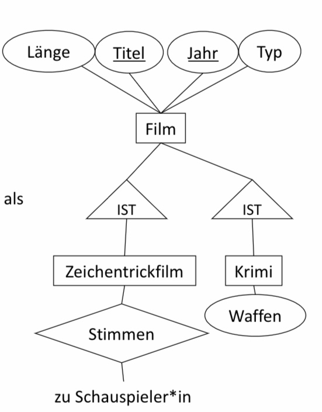
6.3.2. ER-Still¶
Beim ER-Stil wird für jeden Entitytypen E der Hierarchie eine Relation mit den Schlüsselattributen des Wurzel-Entitytypen und den Attributen von E erzeugt. Für das obige Beispiel würden sich folgende Relationen ergeben:
Film(Titel, Jahr, Länge,Typ)
Krimi(Titel, Jahr, Waffen)
Zeichentrickfilm(Titel, Jahr)
Die IST-Relationship selbst erhält keine Relation und die geerbten Schlüsselattribute können für weitere Beziehungen weiterbenutzt werden. In unserem Beipsiel gibt es vier verschiedene Filmsorten. Jeder Film hat ein Tupel in der Relation Filme. Ein konkreter Film (z.B. Roger Rabbit) kann auch Tupel in allen drei Relationen haben.
Zusätzlich können wir noch die Beziehung Stimmen definieren: Stimmen(Titel, Jahr, Name). Wir sehen, dass das Schema von Zeichentrickfilm eine Teilmenge des Schemas von Stimmen ist. Kann man es dann nicht einfach weglassen? Nein, denn es gibt auch stumme Zeichentrickfilme!
6.3.3. Objekt-orientierter Stil¶
Beim Objekt-orientierten Stil gehört eine Entity zu genau einer Klasse. Für jeden möglichen Teilbaum der Hierarchie, der auch die Wurzel enthält, wird eine Relation mit allen Attributen der beteiligten Entitytypen erzeugt. Diese Relation repräsentiert die Entities, die genau diese Komponenten der Hierarchie besitzen. Unser Beispiel oben hat vier Teilbäume: Nur Filme, Filme und Zeichentrickfilme, Filme und Krimis, Filme und Zeichentrickfilme und Krimis. Demnach ergeben sich vier Relationen:
Film(Titel, Jahr, Länge, Typ)
FilmZ(Titel, Jahr, Länge, Typ)
FilmK(Titel, Jahr, Länge, Typ, Waffen)
FilmZK(Titel, Jahr, Länge, Typ, Waffen)
Kann man Film und FilmZ zusammenführen?
Kann man FilmK und FilmZK zusammenführen?
Nein, da jede Relation eine bestimmte Typkombination darstellt.
Wie viele Relationen für Stimmen benötigt man?
Es wird nur eine benötigt: Stimmen(Titel, Jahr, Name)
6.3.4. Null-Werte Stil¶
Beim Null-Werte-Stil wird eine einzige Relation für die gesamte Hierarchie erzeugt. Eine Entity wird durch ein Tupel repräsentiert,welches für fehlende Attribute Null-Werte hat. Für unser Beispiel, wird im Null-Werte-Stil also eine einzige Relation mit allen Attributen erstellt:
Film(Titel, Jahr, Länge, Typ, Waffen)
Filme die keine Krimis sind haben alls Attributwert NULL stehen. Zu beachten ist noch, dass mit der Null-Werte-Darstellung stumme Zeichentrickfilme und Krimis ohne Waffen von „normalen“ Filme nicht mehr zu unterscheiden sind.
6.3.5. Vergleich der drei Stile¶
Alle drei Strategien haben ihre Vor- und Nachteile. Wir vergleichen zunächst die Anzahl der benötigten Relationen bei n Entitytypen:
Null-Stil: Nur eine Relation
ER-Stil: n Relationen
OO-Stil: O(2n-1) Relationen
Nun vergleichen wir den Speicherbedarf:
OO-Stil: Minimaler Speicherbedarf, da nur ein Tupel pro Entity benötigt wird und jeweil nur so viele Attribute wie nötig dargestellt werden.
Null-Stil: Auch nur ein Tupel pro Entity, möglicherweise jedoch mit vielen Null-Werten, welches das Tupel länger macht.
ER-Stil: Viele Tupel pro Entity, es werden jedoch nur Schlüsselattribute wiederholt
Bei der Anfragebearbeitung müssen wir annehmen, das Joins über viele Relationen teuer sind. Daher wäre eine Anfrage mit so wenig Joins wie möglich am günstigten. Das wäre hier der Null-Werte-Stil, da nur eine Tabelle für die Darstellung nötig ist.
Möchten wir nun die folgende Anfrage ausführen: Welche Filme aus 1999 sind länger als 150 Minuten?
ER-Stil: Antwort direkt möglich, da Anfrage direkt an die “normale” Filmrelation gestellt werden kann.
OO-Stil: Anfrage an alle vier Relationen, da die Attribute Länge und Typ in allen vier Relationen vertreten sind.
Welche Waffen wurden in Zeichentrickfilmen, die länger als 150 Minuten sind, verwendet?
ER-Stil: Alle drei Relationen sind relevant, daher müssen drei Joins durchgeführt werden
Filme für die Länge
Zeichentrickfilme für die Tatsache, dass es ein Zeichentrickfilm ist
Krimis für die Waffe
OO-Stil: Anfrage nur an FilmeZK()